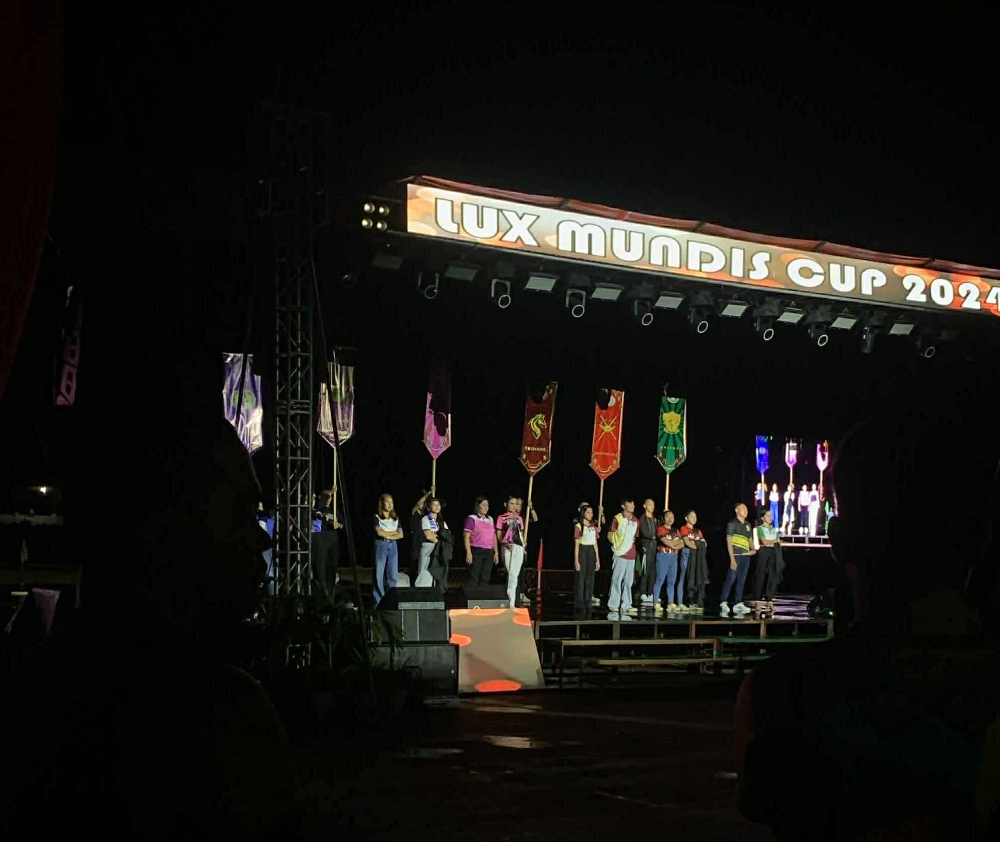
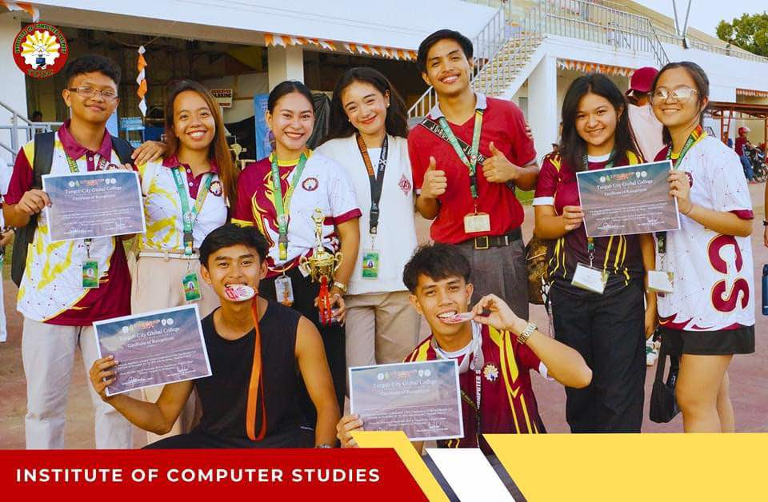

With the theme "Majestic Fusion". This event will showcase a dynamic blend of academic, sports and special activities, all aimed at fostering educational growth, promoting knowledge-sharing within the Lux Mundis community, and enhancing critical thinking skills. Most importantly, the event seeks to nurture camaraderie and strengthen bonds among students from the six (6) institutes of the college.

My own experience at the Cup was one of personal growth and discovery, as I participated in the sports event. The Lux Mundis Cup was more than just an event; it was a powerful testament to the college's commitment to fostering well-rounded individuals. It wasn't just about winning or losing; it was about growth, discovery, and the celebration of knowledge, talent, and collaborative spirit.
It was a reminder that education isn't confined to textbooks or lectures; it's a vibrant, dynamic process that involves teamwork, creativity, and a willingness to push boundaries. The memories I made, the friendships I forged, and the personal growth I experienced during the Lux Mundis Cup are invaluable.